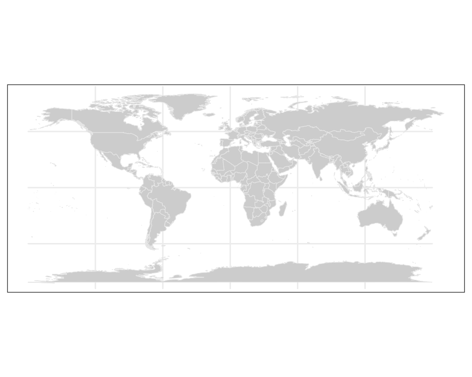
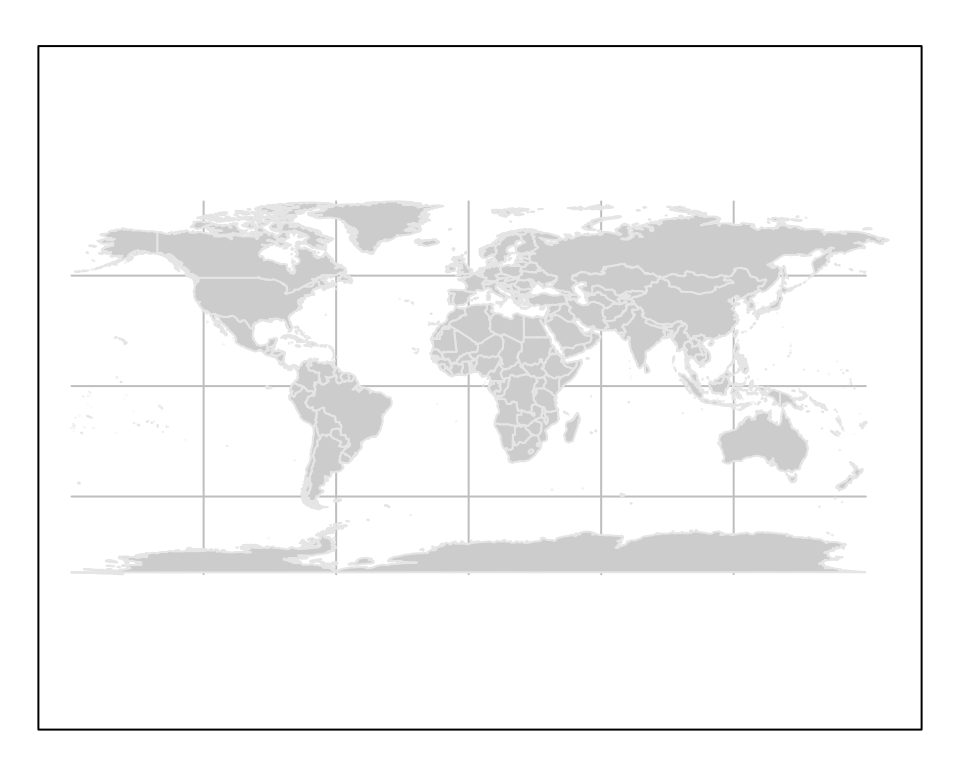
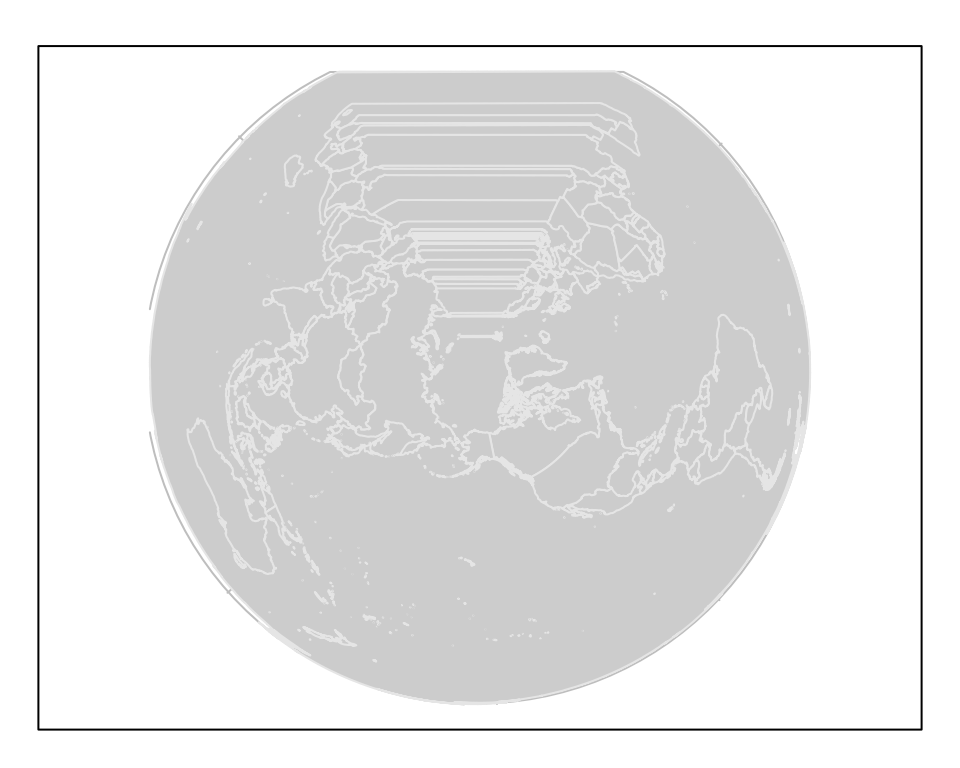
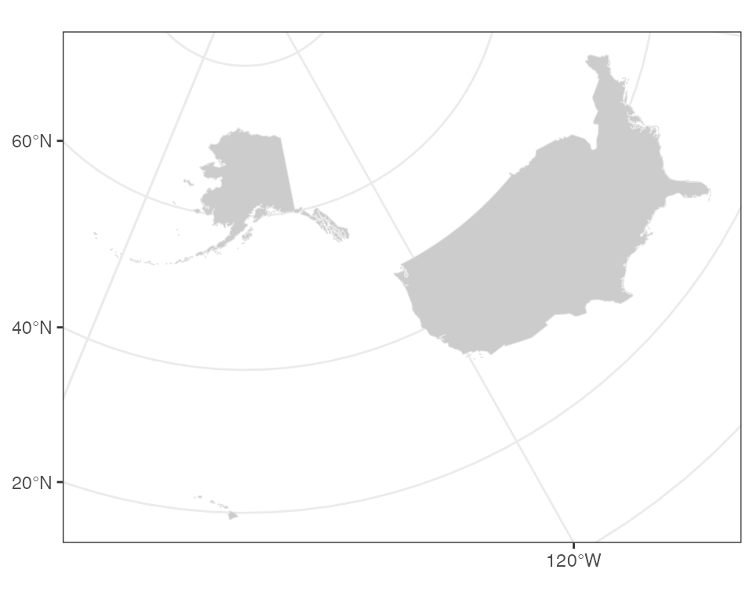
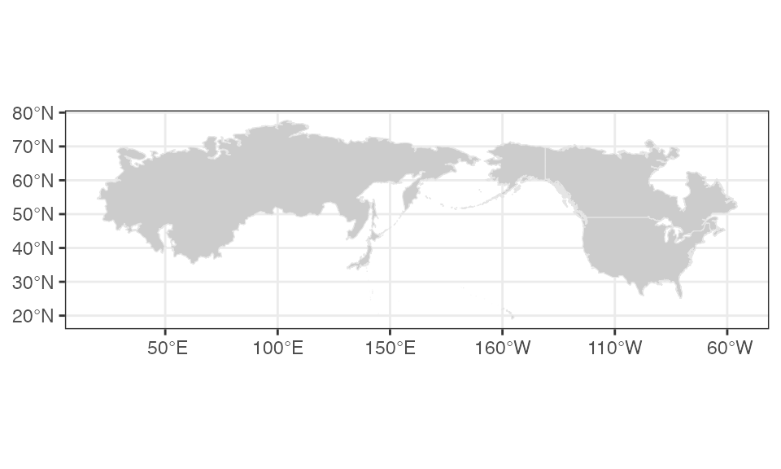
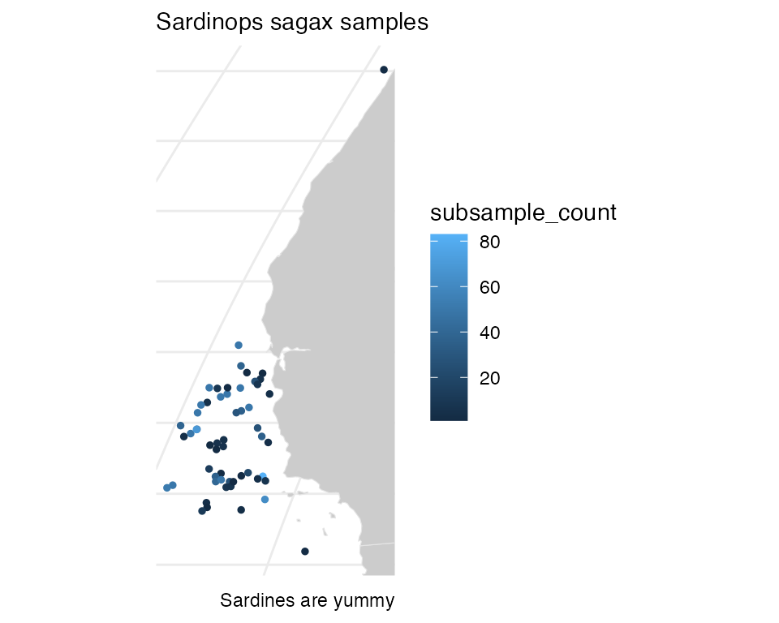

plotdap
The R package plotdap makes it easy to visualize ‘tabledap’ and ‘griddap’ objects obtained via the rerddap package. Maps can be made using either base or ggplot2 graphics, and the user does not need to know the intricacies of obtaining continental outlines, projections, and combining those with the data to form maps. Animations of the data are also readily obtained. plotdap works in a similar fashion with either tables or grids return by rerddap further simplifying the mapping process.
A user who desires fine control of their maps should learn how to map the data themselves - some examples are give in the rerddap vignette. But plotdap provides a simplified workflow of obtaining data using rerddap and quickly and simply mapping the data. In what follows we go over how to install plotdap and it’s basic usage, as well as how to utilize some of the more important options in the package in order to improve the map.
Installation
plotdap can be installed from CRAN with:
and the development version can be installed with:
Getting started with plotdap()
The plotdap() function makes it easy to visualize data acquired via rerddap::tabledap() or rerddap::griddap(). Regardless of the data you want to visualize, you’ll always want to start a plot via plotdap(), where you may specify some “global” plotting options. Subsequent sections will demonstrate how to add tables/grids via add_tabledap()/add_griddap(), but for now we’ll focus on options provided by plotdap(). Most importantly, the first argument decides whether base or ggplot2 graphics should be used for the actual plotting.


In addition to choosing a plotting method, plotdap() is where you can define properties of the background map, including the target projection using a valid coordinate reference system (CRS) definition. Projection is performed using the PROJ.4 library, and spatialreference.org is a great resource for finding PROJ.4 CRS descriptions. Using the search utility, you can for example, search for “South Pole” and pick from a number of options. Here I’ve chosen the MODIS South Pole Stereographic option and copy-pasted the Proj4 page with the CRS definition:
plotdap("base",
mapTitle = "MODIS South Pole Stereographic",
mapFill = "transparent",
mapColor = "steelblue",
crs = "+proj=stere +lat_0=-90 +lat_ts=-90 +lon_0=-63 +k=1 +x_0=0 +y_0=0 +ellps=WGS84 +datum=WGS84 +units=m +no_defs"
)You might notice that some projections aren’t “well-defined” on a global scale, and thus, may result in an error, or a “broken” looking map. For instance, this Albers projection centered on Alaska:
alaska <- "+proj=aea +lat_1=55 +lat_2=65 +lat_0=50 +lon_0=-154 +x_0=0 +y_0=0 +ellps=GRS80 +towgs84=0,0,0,0,0,0,0 +units=m +no_defs"
plotdap("base", crs = alaska)
That does not mean we can’t use this (or similar) projections – we just have to be careful that they are sensible given the lat/lon limits. By default, those limits span the entire world, but as we’ll see later, the limits are shrunk to the given data (i.e., griddap() / tabledap()) limits. In other words, we should expect this projection to work once we “add” some data located near Alaska to the visualization. However, in case you want to make a map without any data, or want to customize the background map in some special way, you can supply an sf object (or something coercable to an sf object) to the mapData argument.
library(sf)
#> Linking to GEOS 3.7.2, GDAL 2.4.2, PROJ 5.2.0
library(mapdata)
w <- st_as_sf(maps::map("world", plot = FALSE, fill = TRUE))
us <- st_transform(subset(w, ID == "USA"), alaska)
plotdap(mapData = us)
With the odd exception of window sizing and projections, the options in plotdap() should just work in a similar way for either plotting method. However, there are some useful options that are deliberately left out, since they work differently based on the plotting method.
The mapData argument can be used to change the resolution of the continental outlines or to limit the outline to a pre-selected area, which can speed up processing because fewer unused polygons need to be clipped. This is particularly important for maps that will cross the dateline. So for example to use the hi-res outlines for VIIIRS SST off the coast of North America:
sstInfo <- rerddap::info('erdVHsstaWS3day')
# get latest 3-day composite sst
viirsSST <- rerddap::griddap(sstInfo,
latitude = c(41., 31.),
longitude = c(-128., -115),
time = c('last','last'),
fields = 'sst')w <- map("worldHires", xlim = c(-140., -114), ylim = c(30., 42.),
fill = TRUE, plot = FALSE)
# map using that outline, temperature color from cmocean
add_griddap(plotdap(mapData = w), viirsSST, ~sst, fill = "thermal" )Maps that cross the dateline work better using the “world2” or “world2Hires” databases frpm the mapdata package. There is a known problem with that continental database in that polygons from certain countries cause artificial lines in the map, and must removed, as done below.
xpos <- c(135.25, 240.25)
ypos <- c(20.25, 60.25)
zpos <- c(70.02, 70.02)
remove <- c("UK:Great Britain", "France", "Spain", "Algeria", "Mali", "
Burkina Faso", "Ghana", "Togo")
#subset world2Hires with those countries removed
w <- map("world2Hires", plot = FALSE, fill = TRUE, ylim = ypos, xlim = xpos)
w <- map("world2Hires", regions = w$names[!(w$names %in% remove)],
plot = FALSE, fill = TRUE, ylim = ypos, xlim = xpos)
# plot result
plotdap(mapData = w)
Since the result of plotdap() is always a map, it always forces a fixed aspect ratio (i.e., \(\frac{height}{width}\) of graph equals \(r=\frac{latitude}{longitude}\)). For this reason, the current size of your graphics device may not be sensible for the value of \(r\) (for instance, if \(r\) is high, but the height of the graphics device is small, you may see an error such as: polygon edge not found since the device cannot possibly render the result under the conditions). For a number of reasons, plotdap() will not automatically resize your graphics device; instead, it’s recommended that you use a reliable graphics device such as Cairo, and use a height/width ratio close to \(r\).
# write plot to disk using the Cairo package
library(Cairo)
# (latitude limits) / (longitude limits)
r <- 85 / 120
CairoPNG("myPlot.png", height = 400 * r, width = 400, res = 96)
# alter default margins for base plotting
# (leaving just enough space for a title)
par(mar = c(0, 0, 1, 0))
plotdap("base", mapData = us, mapTitle = "Albers projection of Alaska")
dev.off()More advanced users that know some base/ggplot2 plotting may want more control of certain aspects of the plot (a later section – Customizing plotdap() objects – covers this topic).
Adding tabledap() layers
The add_tabledap() function allows you to add markers that encode variable(s) obtained via tabledap() to an existing plotdap() object. For example, suppose we have the following sardines data, and wish to understand the frequency of subsample counts:
my_url <- 'https://coastwatch.pfeg.noaa.gov/erddap/'
sardines <- tabledap(
'FRDCPSTrawlLHHaulCatch',
fields = c('latitude', 'longitude', 'time', 'scientific_name',
'subsample_count'),
'time>=2010-01-01', 'time<=2012-01-01', 'scientific_name="Sardinops sagax"',
url = my_url)
head(sardines)
#> <ERDDAP tabledap> FRDCPSTrawlLHHaulCatch
#> Path: [/Users/rmendels/Library/Caches/R/rerddap/825a36f7966d6e261f92f91ee4f5bdf2.csv]
#> Last updated: [2020-01-06 14:41:08]
#> File size: [0 mb]
#> # A tibble: 6 x 5
#> latitude longitude time scientific_name subsample_count
#> <chr> <chr> <chr> <chr> <int>
#> 1 38.1945 -124.07 2010-04-16T04:36:00Z Sardinops sagax 50
#> 2 37.609 -123.6561 2010-04-18T03:54:00Z Sardinops sagax 38
#> 3 37.4188 -123.3463 2010-04-18T11:48:00Z Sardinops sagax 1
#> 4 36.984 -123.3326 2010-04-19T04:27:00Z Sardinops sagax 50
#> 5 36.8118 -123.6868 2010-04-19T07:42:00Z Sardinops sagax 50
#> 6 36.7333 -123.8675 2010-04-19T10:55:00Z Sardinops sagax 50At the very least, add_tabledap() needs a base map (i.e., a plotdap() object), the tabledap() data, and a formula defining the variable of interest (for encoding the color of the markers). In R, you can create a formula by prefixing ~ to some expression. This formula can simply reference a variable already residing in the dataset (e.g., ~subsample_count) or it can be a function of some variables (e.g. ~log2(subsample_count)):
p1 <- add_tabledap(
plotdap(crs = "+proj=robin", mapTitle = "subsample count"),
sardines,
~subsample_count
)
p2 <- add_tabledap(
plotdap(crs = "+proj=robin", mapTitle = "Log subsample count"),
sardines,
~log2(subsample_count)
)
p1
p2
Modifying tabledap() layers
It is also easy to alter the color scale as well as the symbol type and size in add_tabledap() via the color, shape and size arguments.
p1 <- add_tabledap(
plotdap(crs = "+proj=robin", mapTitle = "Sardines - change color"),
sardines,
~subsample_count,
color = "dense",
)
p2 <- add_tabledap(
plotdap(crs = "+proj=robin", mapTitle = "Sardines - change shape and size"),
sardines,
~subsample_count,
shape = 4,
size = 1.
)
p1
p2For further details about these arguments, please refer to the documentation on help(add_tabledap).
Adding griddap() layers
Similar to add_tabledap(), the add_griddap() function makes it easy to add rasters (i.e., rectangular tiles) to a plotdap() object. To demonstrate, lets obtain some of the latest sea surface temperatures along the western coast of the US.
murSST_west <- griddap(
'jplMURSST41',
latitude = c(22, 51),
longitude = c(-140, -105),
time = c('last', 'last'),
fields = 'analysed_sst'
)str(murSST_west$data)
#> 'data.frame': 10156401 obs. of 4 variables:
#> $ time : chr "2020-01-05T09:00:00Z" "2020-01-05T09:00:00Z" "2020-01-05T09:00:00Z" "2020-01-05T09:00:00Z" ...
#> $ lat : num 22 22 22 22 22 22 22 22 22 22 ...
#> $ lon : num -140 -140 -140 -140 -140 ...
#> $ analysed_sst: num 23.4 23.4 23.4 23.4 23.4 ...Again, similar to add_tabledap(), add_griddap() needs a base map (i.e., a plotdap() object), the griddap() data, and a formula defining the variable of interest (for encoding the fill of the rectangles). The add_griddap() function also has a maxpixels argument which sets a maximum threshold for the number of cells (i.e., pixels) to use before projection and plotting occurs. Compared to ggplot2, base plotting is much more efficient at rendering raster objects, so it might be worth increasing the threshold in that case:

The murSST_west grid has a single time point (i.e., length(unique(murSST_west$data$time)) == 1), but what do we do when there are multiple time points? In addition to animating multiple grids (a la add_tabledap()), you also have the option to summarize multiple grids into a single grid. To demonstrate, lets grab some wind speeds measured along the west coast of the US.
wind <- griddap(
'erdQMwindmday',
time = c('2016-04-16', '2016-06-16'),
latitude = c(30, 50),
longitude = c(210, 240),
fields = 'y_wind'
)
unique(wind$data$time)
#> [1] "2016-04-16T00:00:00Z" "2016-05-16T00:00:00Z" "2016-06-16T00:00:00Z"When faced with multiple time periods, and animate = FALSE (the default), the time argument is used to reduce multiple grids (i.e., raster bricks) to a single grid (i.e., a single raster layer). You can pass any R function to the time argument, but when animate = FALSE, you should take care to ensure the function returns a single value. The default uses the mean(na.rm = TRUE) function so that each cell represents the average (in this case amongst three time points), but we could easily set this to var() to get the variance for each cell:
p1 <- add_griddap(
plotdap(mapTitle = "Mean Meridional Wind"),
wind,
~y_wind,
fill = "delta",
time = mean
)
my_func <- function(x) var(x, na.rm = TRUE)
p2 <- add_griddap(
plotdap(mapTitle = "Variance of Meridional Wind"),
wind,
~y_wind,
fill = "delta",
time = my_func
)
p1
p2

Changing the layer order
By default, add_griddap plots the land first and then the grid on top of that. For many uses that is desirable, but at other times it is more desirable to have the land mask the grid. This can now be done in the print method, by saving the plotdap object and printing with the option “landmask = TRUE”.

and compare when land is plotted over the grid:
plotdap(mapTitle = "Land Over Grid") %>%
add_griddap(
viirsSST,
~sst,
fill = "thermal"
) %>%
print(landmask = TRUE)
maxpixels
Images of satellite data can contain a large number of pixels. add_griddap() allows for a differing number of pixels to be used (default is 10,000) by setting the parameter “maxpixels”. When the actual number pixels is larger than the value of “maxpixels”, the image is sub-sampled. This can greatly affect the how the image looks.
plotdap(mapTitle = "maxpixels = 10,000") %>%
add_griddap(
viirsSST,
~sst,
fill = "thermal",
maxpixels = 10000
)
plotdap(mapTitle = "maxpixels = 50,000") %>%
add_griddap(
viirsSST,
~sst,
fill = "thermal",
maxpixels = 50000
)
plotdap(mapTitle = "maxpixels = 100,000") %>%
add_griddap(
viirsSST,
~sst,
fill = "thermal",
maxpixels = 100000
)
The increased resolution can really make a difference when the land masks the grid:
plotdap(mapTitle = "maxpixels = 100,000, landmask") %>%
add_griddap(
viirsSST,
~sst,
fill = "thermal",
maxpixels = 100000
) %>%
print(landmask = TRUE)
Working with other continental outlines
My default, plotdap() uses the global “world” database from the map package, and then trims the polygons based on the limit of the map. Higher resolution coastlines or coastlines that cross the dateline require can be used in plotdap()by passing this information in the function call. Similarly, computations can be sped up by pre-selecting the area of the coastline database before calling plotdap().
To map the VIIRS SST data from the previous section using a subsetted, high-resolution continental outline, first the subset is defined for the high-resolution database:
and then plotted, with the landmask option:
plotdap(mapData = w) %>%
add_griddap(
viirsSST,
~sst,
fill = 'thermal',
maxpixels = 50000
) %>%
print(landmask = TRUE)
The “Simple Ocean Data Assimilation (SODA)” model (see https://www.atmos.umd.edu/~ocean/) reconstructs the historical physical history of the ocean since the beginning of the 20th century. Here is the temperature at 70m depth for December 2015 for the North Pacific Ocean, as an example of using plotdap() when the data cross the dateline:
First, get the SODA data:
soda70Info <- rerddap::info('erdSoda331oceanmday')
xpos <- c(135.25, 240.25)
ypos <- c(20.25, 60.25)
zpos <- c(70.02, 70.02)
tpos <- c('2010-12-15', '2010-12-15')
soda70 <- rerddap::griddap(soda70Info,
longitude = xpos,
latitude = ypos,
time = tpos,
depth = zpos,
fields = 'temp' )then plot with plotdap
remove <- c("UK:Great Britain", "France", "Spain", "Algeria", "Mali",
"Burkina Faso", "Ghana", "Togo")
#subset world2Hires with those countries removed
w <- map("mapdata::world2Hires", plot = FALSE, fill = TRUE,
ylim = ypos, xlim = xpos)
w <- map("mapdata::world2Hires", regions = w$names[!(w$names %in% remove)],
plot = FALSE, fill = TRUE, ylim = ypos, xlim = xpos)
# plot result
plotdap(mapData = w) %>%
add_griddap(
soda70,
~temp,
fill = "thermal"
) %>%
print(landmask = TRUE) 
Combining tables/grids
The plotdap() interface is designed so that you can plot both tables and grids at once (although I don’t recommend trying to plot more than one griddap() or tabledap() object at once). It’s also designed to work well with the %>% operator from the magrittr package so that code can be expressed in a left-to-right (rather than inside-out) fashion:
plotdap("base") %>%
add_griddap(
murSST_west,
~analysed_sst
) %>%
add_tabledap(
sardines,
~subsample_count
)
#> grid object contains more than 10000 pixels
#> increase `maxpixels` for a finer resolution
#> Date in ISO8601 format; converting timezone from UTC to "GMT".
Modifying ggplotdap objects
By this point, you might have noticed some subtle differences in the defaults of plotdap("ggplot2") versus plotdap("base"). The default base version is intentionally left minimal as it is often much harder (or impossible) to modify/remove elements from a base graphic once it’s drawn. However, this is fairly easy using the ggplot2 approach (assuming you know a bit of ggplot2), thanks to the add_ggplot() function (think of it like the + operator in ggplot2).
library(ggplot2)
plotdap(crs = "+proj=robin") %>%
add_tabledap(
sardines,
~subsample_count,
size = 1
) %>%
add_ggplot(
labs(
subtitle = "Sardinops sagax samples",
caption = "Sardines are yummy"
),
theme_minimal(),
theme(axis.ticks = element_blank(), axis.text = element_blank())
)
#> Date in ISO8601 format; converting timezone from UTC to "GMT".
Similarly, VIIRS SST plot in the previous section, detail is lost due to high values observed in landlocked water. To modify that plot:
temp_color <- rerddap::colors$temperature
plotdap(mapTitle = "Reset colorscale limits") %>%
add_griddap(
viirsSST,
~sst,
fill = "thermal"
) %>%
add_ggplot(
scale_fill_gradientn(colours = temp_color, na.value = NA, limits = c(10, 20)),
scale_colour_gradientn(colors = temp_color, na.value = NA, limits = c(10, 20)),
guides(colour = FALSE)
) %>%
print(landmask = TRUE)
Animating plotdap objects
Since time is an important variable in many tabledap() and griddap() objects, both functions have an animate argument which will animate the maps over the time variable. The animations only work for the ggplot2 option, and are based on the latest version of gganimate.
gganimate is a very powerful package, and many of the options available are designed to allow for “tweening”, that is for smooth animation between frames. Unfortunately for complex maps with many features, that can lead to very large animations that can take hours to render. For this reason, all plotdap animations use gganimate::transition_manual so that there is one frame for each time period, and no “tweening” between frames. The animation can be controlled by saving the animation to an object, and then displaying the saved object using gganimate::animate() to control the display. The
Since time is an important variable in many tabledap() objects, add_tabledap() also has a animate argument which allows you to easily animate over the time variable. It is also easy to alter the color scale and symbol type via the color and shape arguments. For details about these arguments, please refer to the documentation on help(add_tabledap)
add_tabledap(
plotdap(crs = "+proj=robin"),
sardines,
~subsample_count,
color = "dense",
shape = 4,
animate = TRUE
)sardine animation
If you just want to animate the raw grid values over time (instead of computing summary statistic(s) for each cell), you can set time to the identity function, then set animate = TRUE:
add_griddap(
plotdap(crs = "+proj=robin"),
wind, ~y_wind,
time = identity,
fill = 'delta',
animate = TRUE
) The frames per second and the total number of frames for an animated plotdap object p can be controlled calling gganimate::animate(p$ggplot, ...) with the desired other settings. Unfortunately, the map bounding box set in p may not be what is desired, because when plotdap prints an object it calculates a good bounding box for a map, but that is not stored in the object p. A utility function bbox_set() is included which will add a desired bounding box.